AgentWorkShop 全功能验收 · 实机演示图册
2026-10-27 · main@f541cdec(v0.8.4)· 生产构建 + 种子实例 · 走查脚本与断言明细见同目录 demo-checks.json,完整报告见 2026-10-27-full-acceptance-report.md
T0 静态门禁 全绿(unit 582/582)
T1 组件面 全绿(MCP 14 · 插件 22 · Twin 5 · Skills 124)
T2 实时 E2E 10 套全绿 519 项 + 注塑 4/6 + IDD 2 套环境受限
T3 实机走查 24/24 · 0 页面错误
实机截图(16 页,全部为运行中实例的真实渲染)
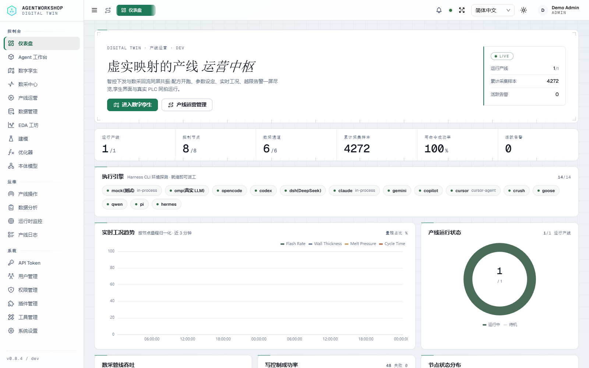
01 仪表盘 — 运行产线/控制节点/数采通道/写命令成功率
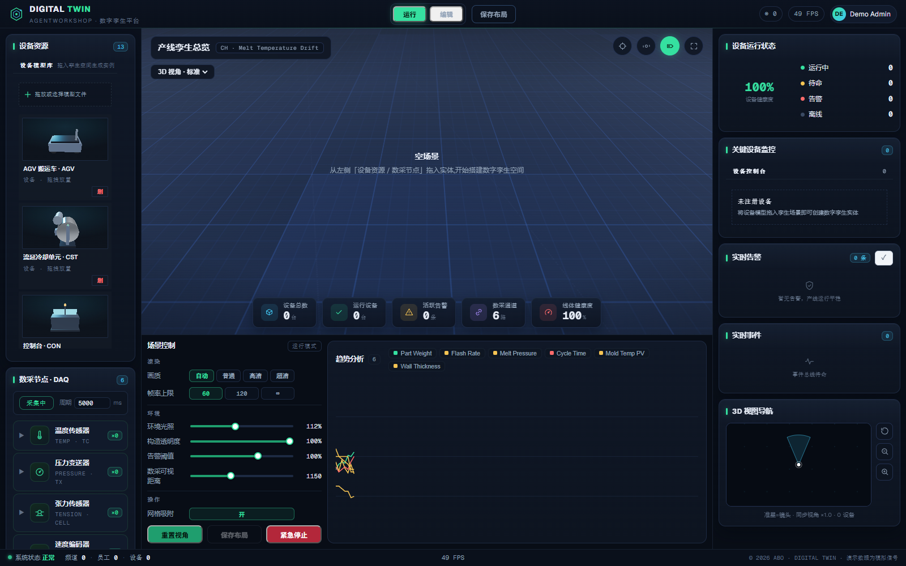
02 数字孪生 — 3D 平台 49 FPS · 设备资源 13 · 数采通道 6
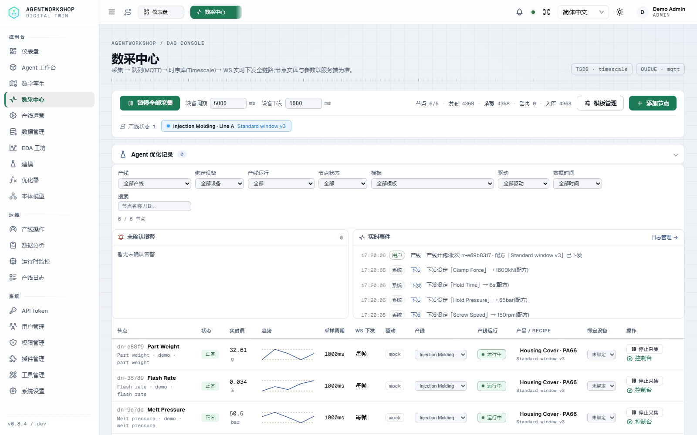
03 数采中心 — 节点台账与采样状态
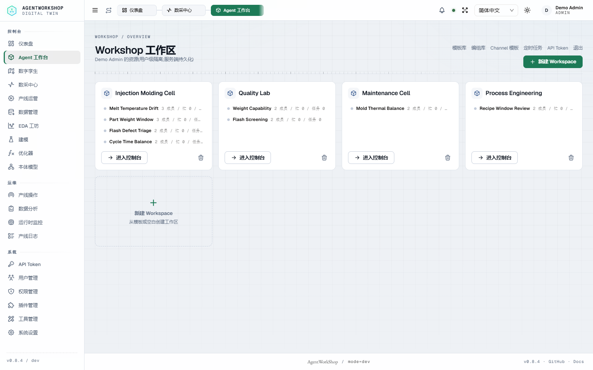
04 产线运营 — 产线/产品/配方/批次
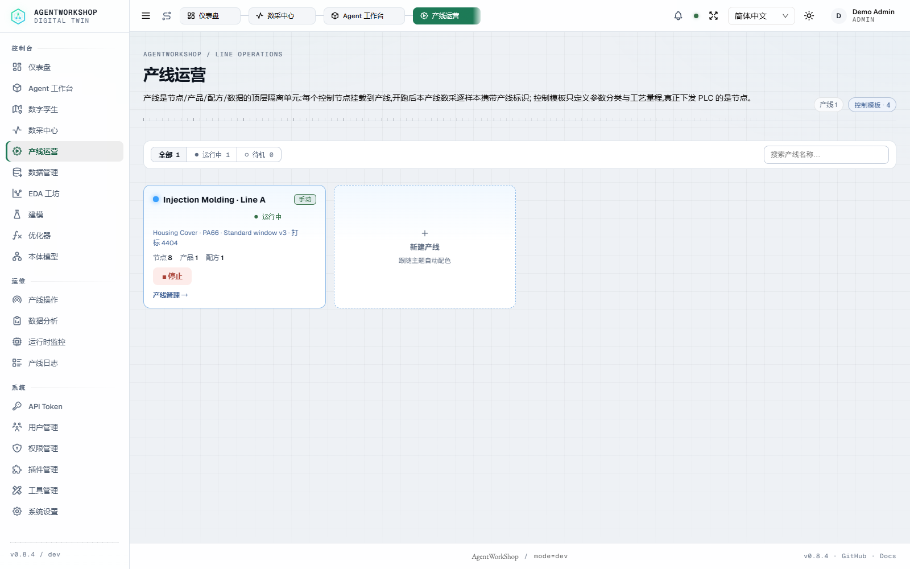
05 数控写控 — 回路设定与回读
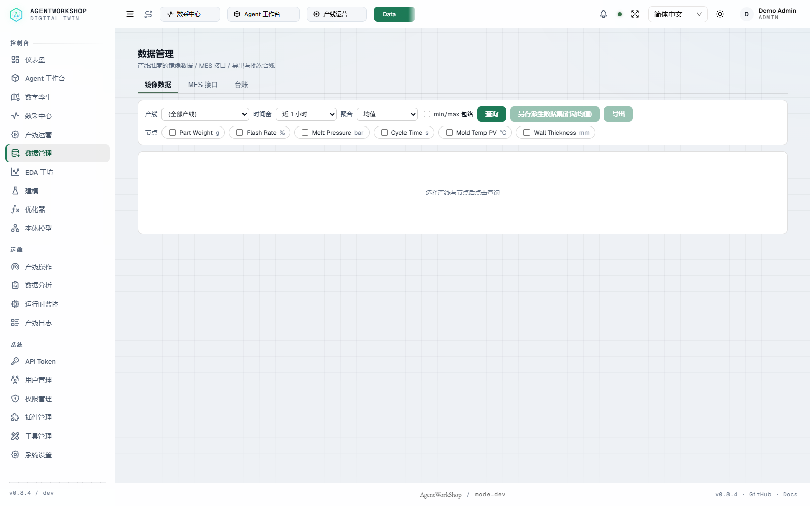
06 数据管理 — 镜像数据 / MES 接口 / 台账三页签

07 EDA 工坊 — 选线→+Y→查询,真实绘出 Part Weight 1h 趋势(32.2–32.8g)
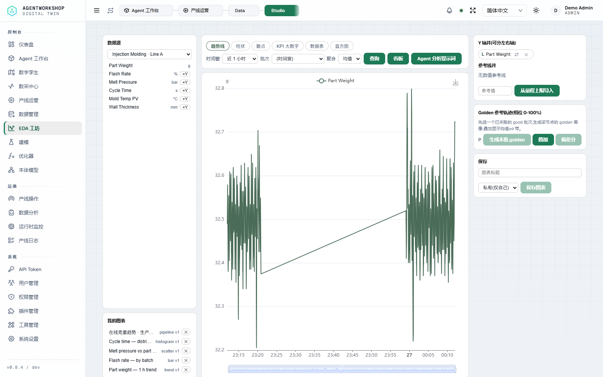
08 在线查看器 — 图表卡双击打开
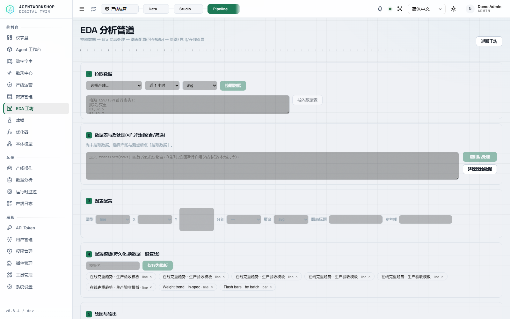
09 管道图表 — 在线拉数/CSV 导入→代码后处理→图表
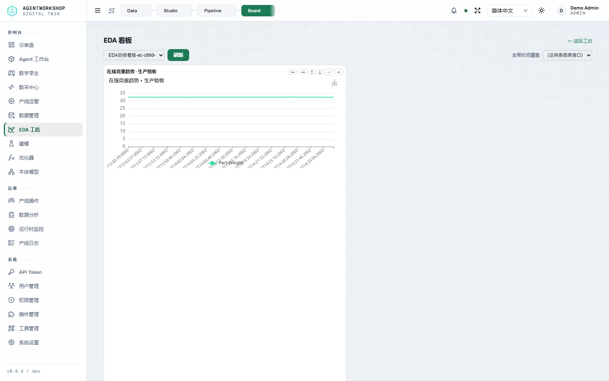
10 EDA 看板 — 真实看板与快照卡渲染(刻度格式列为化妆修)
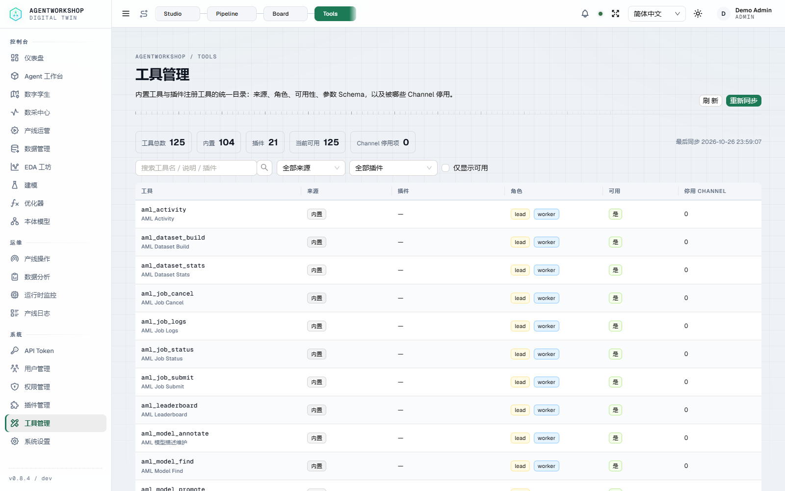
11 工具管理 — 总数 125 = 内置 104 + 插件 21,与 API 双向核对
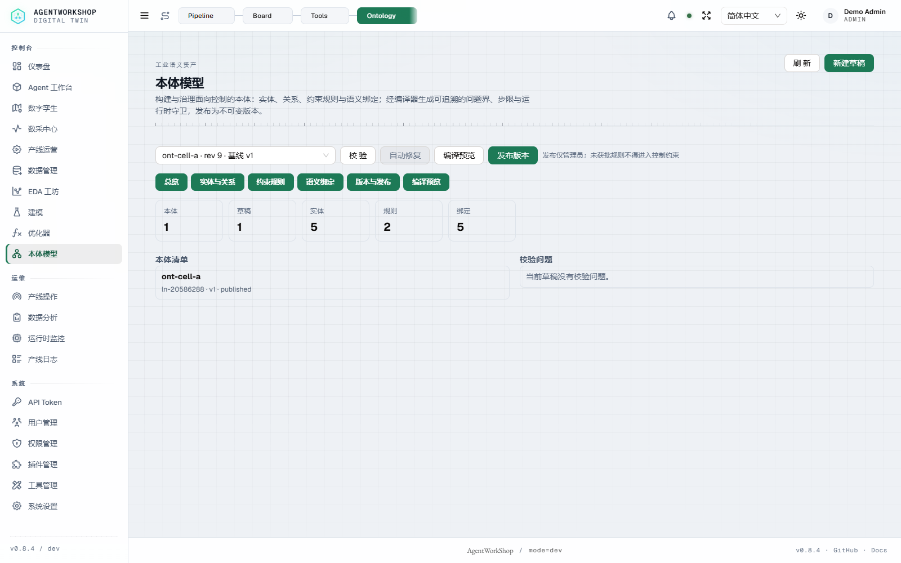
12 本体模型 — 六 tab · 实体 5/规则 2/绑定 5 · 已发布 v1
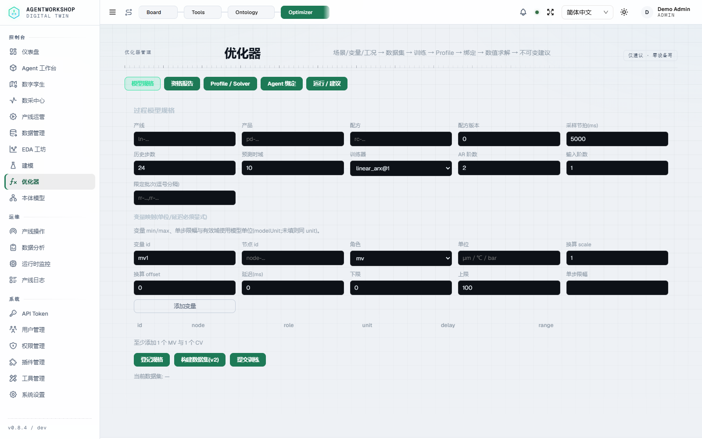
13 优化器 — 过程模型/求解/下发
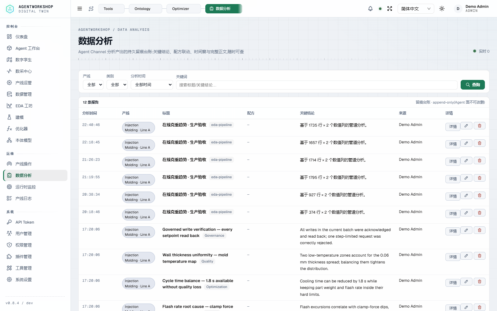
14 数据分析 — 台账行 19
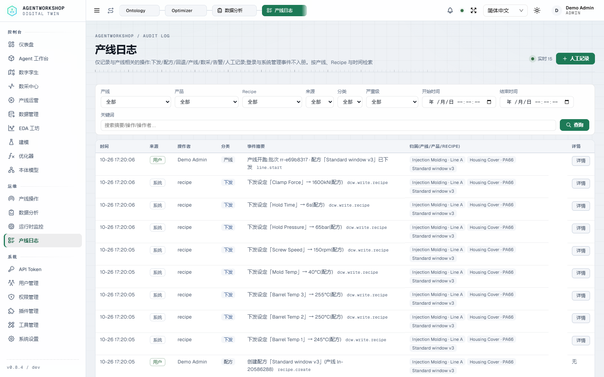
15 产线日志 — 审计检索
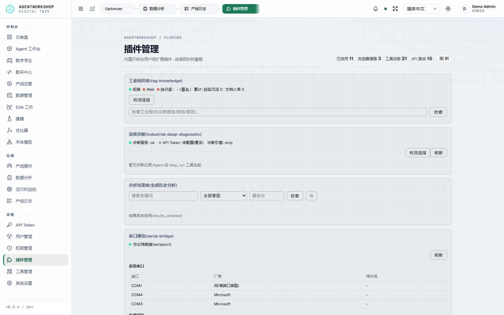
16 插件管理 — 装载面
验收矩阵摘要
| 层 | 套件 | 结果 |
|---|---|---|
| T0 | lint / typecheck / unit / docs / i18n / readme / docs:build | 全绿(unit 582/582 · docs 91/91 · i18n 3149) |
| T1 | MCP · 插件生命周期 · SDK · Twin · Skills | 14 · 22 · PASS · 5 · 124 |
| T2 | EDA 管道 / 产线治理 / 优化器 / 本体 live+离线 / 模型闭环 / MES×Agent / api-live / 数据台×2 | 24 · 44 · 104 · 87+57 · 54 · 25 · 60 · 50+14 |
| T2 | 注塑治理闭环(写入/治理链) | 4/6 — P1/P2/P4/P7 过;P5 红在 PV 标定,P6 另被 ≥300s 试验节拍门拒 |
| 边界 | IDD 结果库 ×2 · bench attainment · Mimosa | 环境受限 / 仿真标定红 / 扫描未完成(不构成安全认定) |
结论:功能面验收通过,系统设计优秀(治理链 fail-closed、单咽喉+交集限界、数据面强制、诚实可观测); 真实产业上线 = 有条件就绪:真机 FAT/SAT、功能安全评估、安全整改+复扫、HA/容量、仿真标定五道闸门关闭前,不宣告可投产。 详见完整报告 §8–§10。